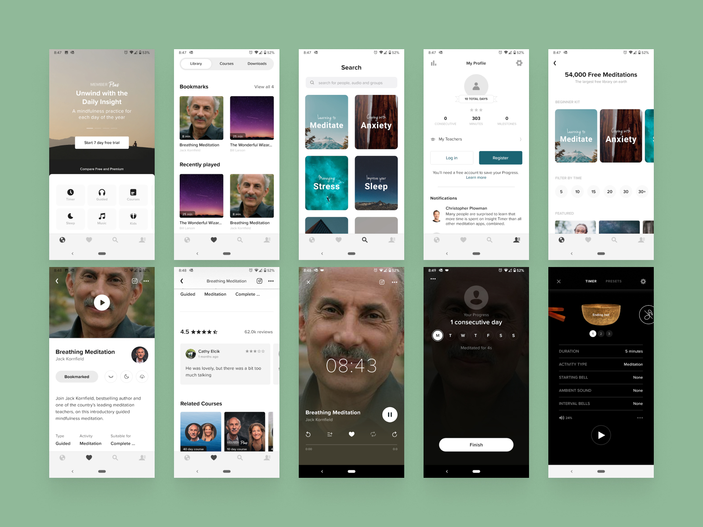
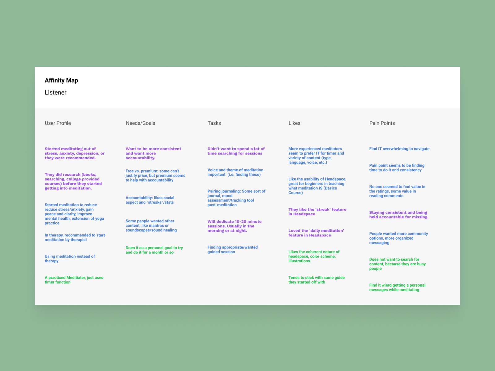
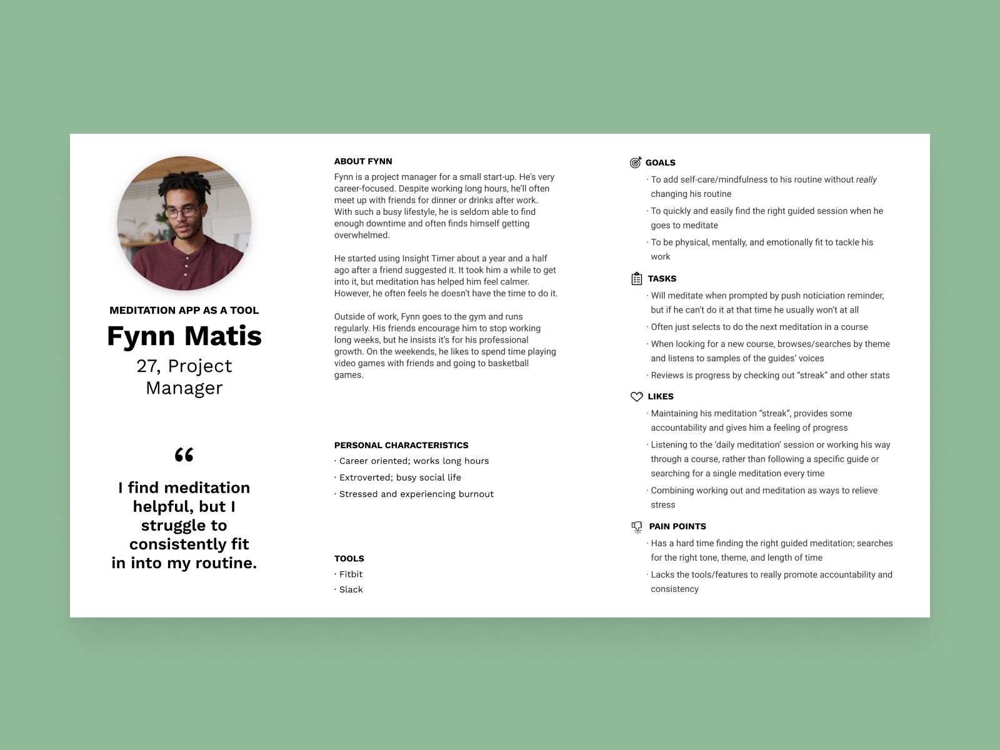
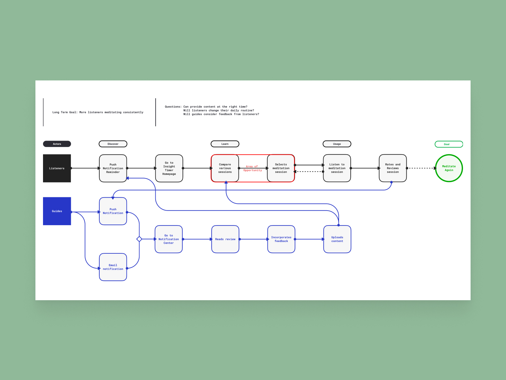
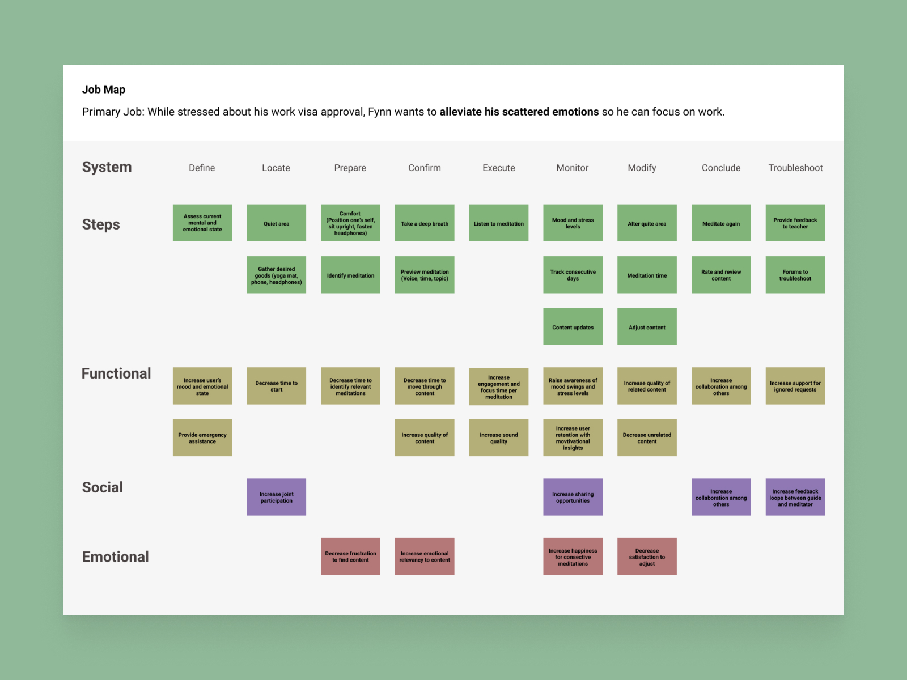
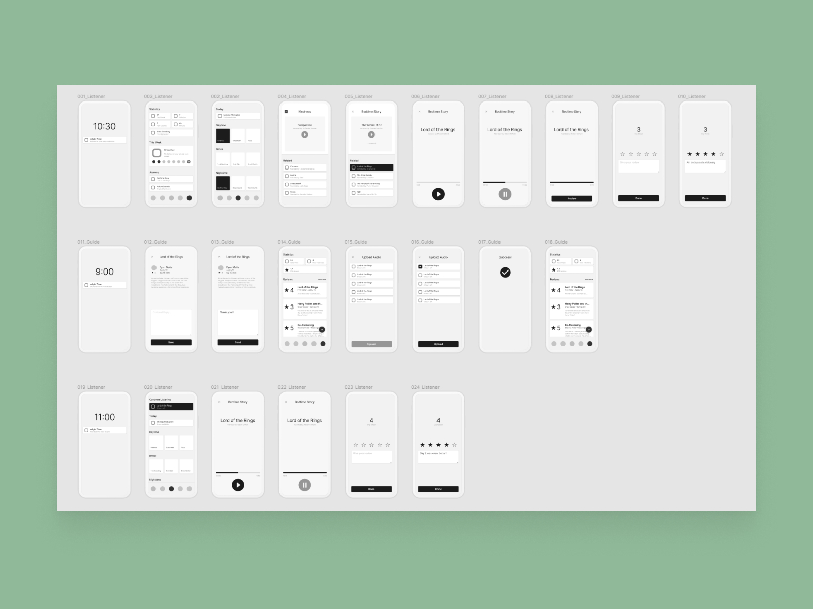
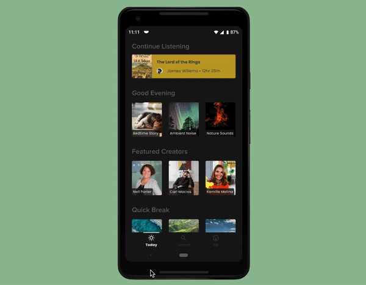
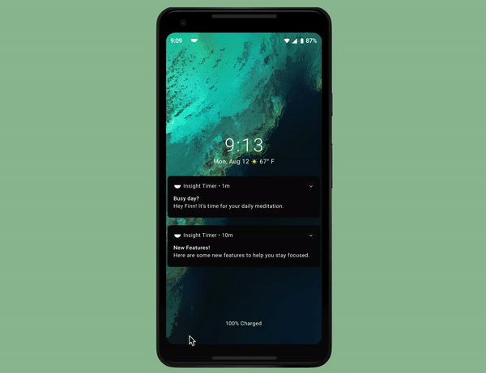
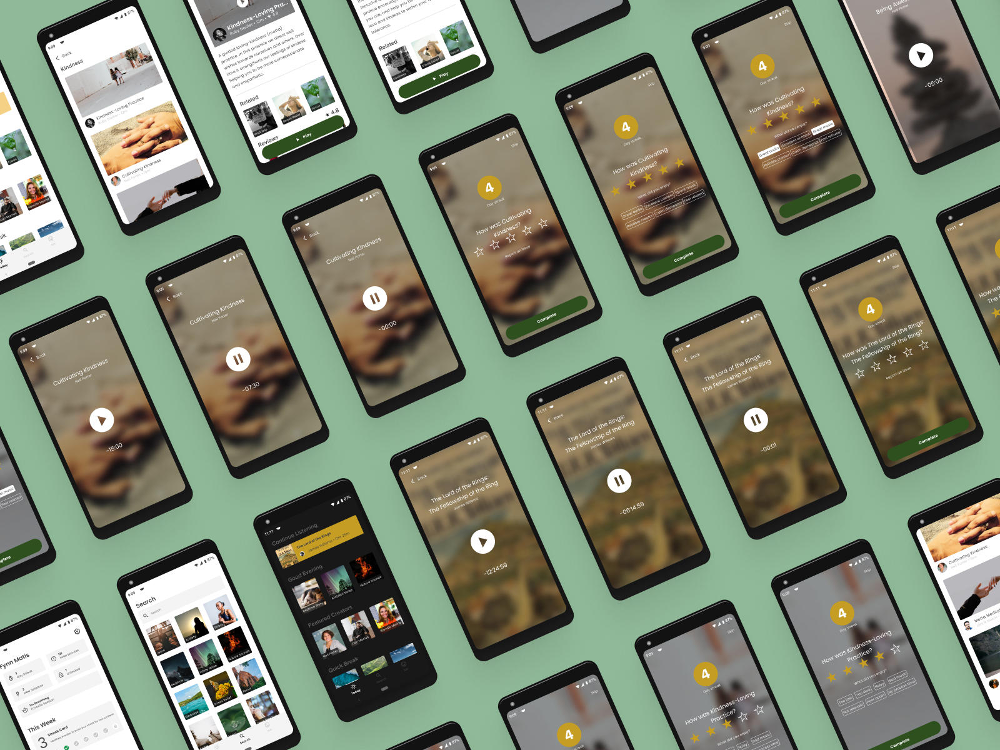

Building a Platform of Mindfulness; Designing an education application that runs on worldwide expertise.
Insight Timer is a health platform bringing teachers together to help people seek transcendence.
Insight Timer has 10 million meditators and 5,000 professional teachers. It allows people to discover and enjoy the largest library of guided meditations. Teachers can record, upload, and share their philosophies around the world. In 2016 it was part of Time magazine's list of 50 best apps.
As part of my graduate program, my assignment was to research and redesign Insight Timer. Throughout, I mapped workflows, built prototypes, and validated them with real users.
In high-stress times, shortness of breath can result in panic attacks or seizures. With COVID-19 fueling stress and anxiety, composure and patience are vital. Today mental health and healthcare are hot issues, and many can't afford medication or therapy. As technology advances, we must present affordable and accessible healthcare solutions. For people who struggle with panic attacks, meditation is a low-cost choice to prevent symptoms escalating.
I focused my efforts on a single problem statement:
"Fynn, a career-focused meditator, needs to feel accountable and motivated without leaving his comfort zone to spend more time with his friends."
Early on, it was imperative to recognize the diverse factors that impact the Meditator and Guide experience. I began my research by reaching out and speaking to 15 Meditators and Guides (trained experts). We discussed their stories, motivations, and pain points as they meditate.
I distilled this information into two audience types; guides and listeners, and four personas.
The class at this stage was two months long and meant that education and plans were fast-tracked. There were no discussions with product management, development, milestones, or sprints. The aggressive deadline involved expediting the process and limiting the scope.
I started my process by asking myself two questions:
Looking back, I worked backward from the meditator's desired thoughts, feelings, and actions. After creating a Sprint Map, Jobs-To-Be-Done Map, wireframes, I settled on two new features:
  Today is a set of curated content for the listener. It's based on the time of day, mood, and past meditations to help stay motivated. The feature presents opportunities to learn from various teachers and skill sets. With machine learning capabilities, listeners can discover new categories to keep them motivated.
Stats features a variety of information to hold listeners accountable as they progress. With the data, they can see their journey, reflect on their progress, and make adjustments. Over time, 'Today' updates with fresh content to keep them motivated.
Both ideas materialized, and I put a test plan to confirm my assumptions.
Testing Today and Stats with five participants revealed:
The feedback validated most of the design goals I assumed. I did not expect the Play button confusion but conceded as I watched them struggle. Based on feedback, I updated the button placement and clarified the data on a splash screen.
Adding more content doesn't increase retention but making it more personal can. By introducing AI and machine learning, meditators have intimate content to encourage motivation.
They always say 'Quality over quantity,' but in retrospect, I recognize my need for perfection can hinder my speed. With this course expedited, that approach became tested. After my usability tests, I realized the product success relies on its long-term usefulness and not it's short-term perfections.